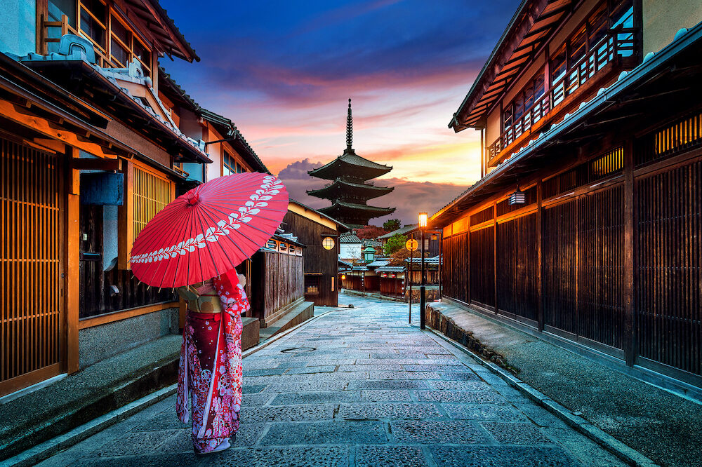
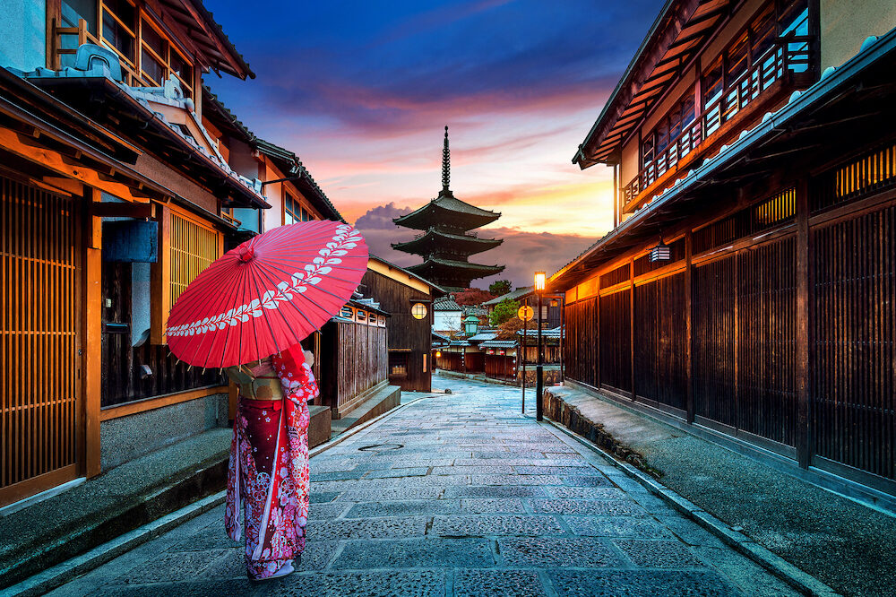

ABOUT KYOTO, JAPAN
Kyoto is Japan in a nutshell. It’s the cultural and historical heart of the country. It’s the best place in all Japan to experience traditional temples, shrines, gardens, geisha, shops, restaurants and festivals. In short, Kyoto is the most rewarding destination in all of Japan and it should be at the top of any Japan travel itinerary. Indeed, I may be biased, but I’d go so far as to say that Kyoto is the most rewarding single city in all of Asia.
GETTING TO KYOTO, JAPAN
A lot of airlines fly from Manila to Kansai Airport.
If you book way in advance, you'll get the best deals from
Cebu Pacific Air. Cebu Pacific flies to Osaka five times a week.
Their lowest year-round fare is at P6399, which is a great deal
already.
OTHER PLACES TO VISIT

Mount Fuji
Without a doubt Japan's most recognizable landmark,
majestic Mount Fuji (Fuji-san) is also the country's
highest mountain peak. Towering 3,776 meters over an
otherwise largely flat landscape to the south and east,
this majestic and fabled mountain is tall enough to be
seen from Tokyo, more than 100 kilometers away.
Mount Fuji has for centuries been celebrated in art and
literature and is now considered so important an icon that
UNESCO recognized its world cultural significance in 2013.
Part of the Fuji-Hakone-Izu National Park, Mount Fuji is
climbed by more than a million people each summer as an act
of pilgrimage, which culminates in watching the sunrise
from its summit.

Osaka Castle
Built in 1586 by famous Japanese warrior and
politician Toyotomi Hideyoshi, Osaka Castle (Ōsaka-jō) was
at the time the largest and most important fortress in the
country. Although destroyed and rebuilt a number of times
since, the present structure, built in 1931, remains true
to the original.
Highlights of a visit include the huge five-story,
42-meter-tall main tower. Built on an imposing 14-meter-tall
stone base, the tower is home to a number of displays
detailing the history of the castle and the city. Be sure
to visit the top floor for its superb views over Osaka,
an especially attractive sight as the sun sets.
Also of interest in Osaka Castle Park is the Hokoku Shrine,
while Osaka's best-known temple, Shitennō-ji, is also worth
visiting and dates back to AD 59. Notable as Japan's first
Buddhist temple, this lovely shrine features a five-story
pagoda along with a number of other exquisitely decorated
buildings. Among them are the Golden Pavilion (Kondō),
with its fine statues and paintings; the Lecture Hall
(Kōdō); and a lovely covered corridor linking three of
the site's gates.

Chūbu-Sangaku National Park and the Japanese Alps
Japan boasts a number of outstanding areas of natural
beauty, many of them designated as national parks or, in
some cases, UNESCO World Heritage Sites. One of the
country's most spectacular of these is Chūbu-Sangaku
National Park in the center of Honshu. Located in the
park's northern and central regions is the group of
mountains collectively referred to as the Hida Mountains,
or Japanese Alps.
OTHER PLACES TO VISIT
Mount Fuji
Without a doubt Japan's most recognizable landmark,
majestic Mount Fuji (Fuji-san) is also the country's
highest mountain peak. Towering 3,776 meters over an
otherwise largely flat landscape to the south and east,
this majestic and fabled mountain is tall enough to be
seen from Tokyo, more than 100 kilometers away.
Mount Fuji has for centuries been celebrated in art and
literature and is now considered so important an icon that
UNESCO recognized its world cultural significance in 2013.
Part of the Fuji-Hakone-Izu National Park, Mount Fuji is
climbed by more than a million people each summer as an act
of pilgrimage, which culminates in watching the sunrise
from its summit.
Osaka Castle
Built in 1586 by famous Japanese warrior and
politician Toyotomi Hideyoshi, Osaka Castle (Ōsaka-jō) was
at the time the largest and most important fortress in the
country. Although destroyed and rebuilt a number of times
since, the present structure, built in 1931, remains true
to the original.
Highlights of a visit include the huge five-story,
42-meter-tall main tower. Built on an imposing 14-meter-tall
stone base, the tower is home to a number of displays
detailing the history of the castle and the city. Be sure
to visit the top floor for its superb views over Osaka,
an especially attractive sight as the sun sets.
Also of interest in Osaka Castle Park is the Hokoku Shrine,
while Osaka's best-known temple, Shitennō-ji, is also worth
visiting and dates back to AD 59. Notable as Japan's first
Buddhist temple, this lovely shrine features a five-story
pagoda along with a number of other exquisitely decorated
buildings. Among them are the Golden Pavilion (Kondō),
with its fine statues and paintings; the Lecture Hall
(Kōdō); and a lovely covered corridor linking three of
the site's gates.